To access the Universal Windows Platform (UWP) Player settings, go to Edit > Preferences > Project Settings > Player from the main menu in Unity. Use the Player settings to determine how Unity builds and displays your final application. For a description of the general Player settings, refer to Player Settings.
Use the Icon settings to customize the branding for your app on the Microsoft Store.
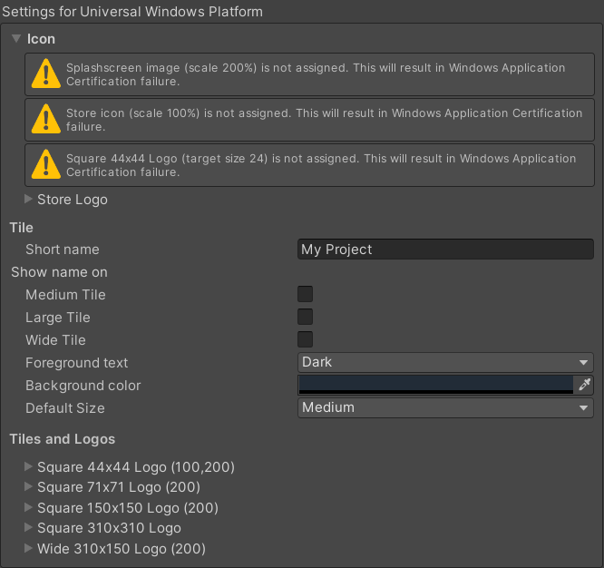
Icon Settings for UWP.
The Icon section displays warnings for any images that are required for certification but haven’t been assigned. A UWP application must specify icon and logo images as part of the package before you can submit it to the Microsoft Store.
Expand the Store Logo section to specify the image that appears on the Store description page for the application. You can add up to eight different resolutions.
Tile
Customize the general appearance of your Microsoft Store tiles with these settings:
属性
描述
Short name
Sets an abbreviated name for the app.
Show name on
Indicates each icon image you want the name to appear on: Medium Tile, Large Tile, or Wide Tile.
Foreground text
Chooses whether to use Light or Dark text on the app’s Tile.
Background color
Specifies what color to use for the background.
Default Size
Chooses which size you want to use as the default size for the Tile.
Not Set
不使用默认大小。
Medium
使用中等大小。
Wide
使用宽尺寸。
Unity 将这些选项直接复制到 Package.appxmanifest 文件。
Tiles and Logos
Specify the images your tiles display on the Microsoft Store with these settings:
属性
描述
Square 44x44 Logo
设置 44x44 徽标图像以在应用程序的磁贴上使用。最多可以设置 10 个分辨率。
Square 71x71 Logo
设置 71x71 徽标图像以在应用程序的磁贴上使用。最多可以设置 5 个分辨率。
Square 150x150 Logo
设置 150x150 徽标图像以在应用程序的磁贴上使用。最多可以设置 5 个分辨率。
Square 310x310 Logo
设置 310x310 徽标图像以在应用程序的磁贴上使用。最多可以设置 5 个分辨率。
Wide 310x150 Logo
设置 310x150 徽标图像以在应用程序的磁贴上使用。最多可以设置 5 个分辨率。
Resolution and Presentation
Use the Resolution and Presentation section to customize aspects of the screen’s appearance.
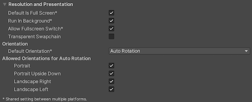
Resolution and Presentation settings for UWP.
属性
描述
Default is Full Screen
Sets the app window to the full-screen native display resolution, covering the whole screen. This mode is also known as borderless full-screen. Unity renders the app content at the resolution set by a script, or the native display resolution if none is set and scales it to fill the window. When scaling, Unity adds black bars to the rendered output to match the display aspect ratio to prevent content stretching. This process is called letterboxing.
Run In Background
Indicates whether to keep the game running (rather than pausing) if the app loses focus.
Allow Fullscreen Switch
Indicates whether to allow default OS full-screen key presses to toggle between full-screen and windowed modes.
Transparent Swapchain
Indicates whether to set AlphaMode on the swap chain to DXGI_ALPHA_MODE_PREMULTIPLIED.
This setting is used only for UWP projects that use the XAML build type. By enabling this setting, you can compose Unity content with other XAML content in your application.
Use the Allowed Orientations for Auto Rotation section to specify which orientations the application supports when you set Default Orientation to Auto Rotation. This is useful, for example, to lock the application to landscape orientation but allow the user to switch between landscape left and landscape right.
This section is visible only when Default Orientation is set to Auto Rotation. Enable each orientation by checking its box in this section:
Property
Description
Portrait
Indicates whether the application supports portrait screen orientation where the bottom of the application’s window aligns with the bottom of the device’s screen.
Portrait Upside Down
Indicates whether the application supports portrait screen orientation where the bottom of the application’s window aligns with the top of the device’s screen.
Landscape Right
Indicates whether the application supports landscape screen orientation where the right side of the application’s window aligns with the bottom of the device’s screen.
Landscape Left
Indicates whether the application supports landscape screen orientation where the right side of the application’s window aligns with the top of the device’s screen.
Splash Image
Above the common Splash Screen settings, the Player Settings settings allow you to specify splash images for UWP.
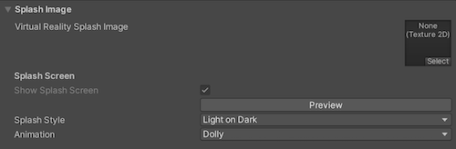
Splash settings for UWP.
Use the Virtual Reality Splash Image property to select a custom splash image to display in Virtual Reality displays.
A Mixed Reality headset needs to build world-locked coordinate systems from its environment to allow holograms to stay in position. Tracking loss occurs when the headset loses track of where it is (can’t locate itself) in the world. This leads to a breakdown in spatial systems (spatial mapping, spatial anchors, spatial stages).
When this happens, Unity stops rendering holograms, pauses the game, and displays a notification. You can customize the notification image that appears by enabling the On Tracking Loss Pause and Show Image property, and then selecting the image to display with the Tracking Loss Image property.
While your application initializes, UWP shows a Splash screen that appears before the Made with Unity Splash screen. It’s best practice to match the UWP Splash screen background to the Splash screen image because it’s more visually appealing. The default color is black.
To overwrite the UWP specific Splash screen background color:
Go to Player Settings > Splash Screen and enable Overwrite Background Color.
Choose a color from the Background Color selector.
If you overwrite the default background color, Unity changes the color value in the application manifest. If you are using the XAML application type, Unity also sets the color value in the initial XAML page.
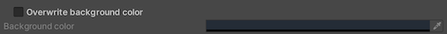
Overwrite background color Splash settings for UWP.
Use these settings to customize how Unity renders your game for UWP.
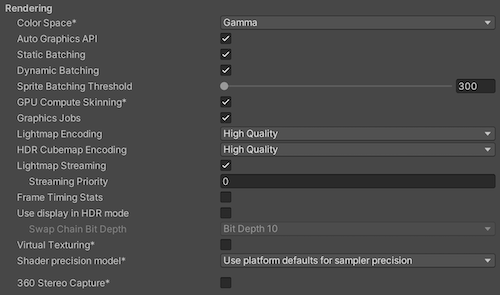
Rendering settings for UWP.
Property
Description
Color Space
Choose which color space Unity uses for rendering: Gamma or Linear. For more information, see Linear rendering overview.
Gamma: Gamma color space is typically used for calculating lighting on older hardware restricted to 8 bits per channel for the frame buffer format. Even though monitors today are digital, they might still take a gamma-encoded signal as input.
Linear: Linear color space rendering gives more precise results. When you select to work in linear color space, the Editor defaults to using sRGB sampling. If your Textures are in linear color space, you need to work in linear color space and disable sRGB sampling for each Texture.
Auto Graphics API
Indicates whether to manually pick and reorder the graphics APIs. By default this option is enabled, and Unity uses Direct3D11.
Use dynamic batching (enabled by default). For more information, refer to Draw call batching.
Note: Dynamic batching has no effect when a Scriptable Render Pipeline is active, so this setting is only visible if the Scriptable Render Pipeline AssetGraphics setting is blank.
Sprite Batching Threshold
Controls the maximum vertex threshold used when batching.
GPU Compute Skinning
Indicates whether to use DX11/DX12/ES3 GPU skinning.
Graphics Jobs
Offloads graphics tasks (render loops) to worker threads running on other CPU cores. This option reduces the time spent in Camera.Render on the main thread, which can be a bottleneck.
Lightmap Encoding
Defines the encoding scheme and compression format of the lightmaps. You can choose from Low Quality, Normal Quality, or High Quality.
HDR Cubemap Encoding
Defines the encoding scheme and compression format of the HDR Cubemaps. You can choose from Low Quality, Normal Quality, or High Quality.
Lightmap Streaming
Uses Mipmap Streaming for lightmaps. Unity applies this setting to all lightmaps when it generates them.
Sets the priority for all lightmaps in the Mipmap Streaming system. Unity applies this setting to all lightmaps when it generates them. Positive numbers give higher priority. Valid values range from –128 to 127.
Frame Timing Stats
Allows Unity to gather CPU/GPU frame timing statistics. Use this option with the Dynamic Resolution camera setting to determine if your application is CPU or GPU bound.
Use Display In HDR Mode (Windows Only)
Allows the game to automatically switch to HDR mode output when it runs. This option works only on displays that support this feature. If the display doesn’t support HDR mode, the game runs in standard mode.
Swap Chain Bit Depth
Selects the number of bits in each color channel for swap chain buffers. You can select Bit Depth 10 or Bit Depth 16. The option to choose bit depth only becomes available when you enable HDR Mode.
For more information on bit depth, refer to the Scripting API page for D3DHDRDisplayBitDepth.
Virtual Texturing (Experimental)
Enable this option to reduce GPU memory usage and texture loading times if your Scene has many high resolution textures. For more information, refer to Virtual Texturing.
Note: The Unity Editor requires a restart for this setting to take effect.
Allows Unity to capture stereoscopic 360 images and videos. When enabled, Unity compiles additional shader variants to support 360 capture (only on Windows). When enabled, the enable_360_capture keyword is added during the Stereo RenderCubemap call. This keyword isn’t triggered outside the Stereo RenderCubemap function.
The scripting backend determines how Unity compiles and executes C# code in your Project. This setting defaults to IL2CPP for Universal Windows Platform and can’t be changed.
API Compatibility Level
Choose which .NET APIs you can use in your project. This setting can affect compatibility with third-party libraries. However, it has no effect on Editor-specific code (code in an Editor directory, or within an Editor-specific Assembly Definition).
Tip: If you are having problems with a third-party assembly, you can try the suggestion in the API Compatibility Level section below.
.Net Framework
Produces larger builds and any additional APIs available are not necessarily supported on all platforms. Choose this option when using libraries that access APIs not included in .NET Standard 2.0. Compatible with the .NET Framework 4 (which includes everything in the .NET Standard 2.0 profile as well as additional APIs).
Produces smaller builds and has full cross-platform support.
IL2CPP Code Generation
Defines how Unity manages IL2CPP code generation.
Faster runtime
Generates code optimized for runtime performance. This setting is enabled by default.
Faster (smaller) builds)
Generates code optimized for build size and iteration. This setting generates less code and produces a smaller build, but may reduce runtime performance, especially for generic code. Use this option when faster build times are important, such as when iterating on changes.
C++ Compiler Configuration
Chooses the C++ compiler configuration used when compiling IL2CPP generated code.
Note: This property is disabled for the Universal Windows Platform because it’s chosen in the generated Visual Studio project.
Use incremental GC
Uses the incremental garbage collector, which spreads garbage collection over several frames to reduce garbage collection-related spikes in frame duration.
Indicates whether Mono validates types from a strongly-named assembly.
Allow downloads over HTTP
Indicates whether to allow downloading content over HTTP. The options are Not allowed, Allowed in Development builds only, and Always allowed. The default option is Not allowed due to the recommended protocol being HTTPS, which is more secure.
Accelerometer Frequency
Defines how often to sample the accelerometer. If you choose Disabled, then no samples are taken. Otherwise, you can choose from 15Hz, 30Hz, 60Hz and 100Hz frequencies.
You can choose your mono API compatibility level for all targets. Sometimes a third-party .NET library uses functionality that’s outside of your .NET compatibility level. To understand what’s going on in such cases, and how to best fix it, try following these suggestions:
Drag the .NET assemblies for the API compatibility level that you are having issues with into ILSpy. You can find these under Data/MonoBleedingEdge/lib/mono/YOURSUBSET/.
拖入第三方程序集。
右键单击第三方程序集并选择 Analyze。
In the analysis report, inspect the Depends on section. The report highlights anything that the 3rd-party assembly depends on, but that’s not available in the .NET compatibility level of your choice in red.
Adds entries to this list to pass additional arguments to the Roslyn compiler. Use one new entry for each additional argument. To create a new entry, click Add (+). To remove an entry, click Remove (-).
When you have added all desired arguments, click Apply to include your additional arguments in future compilations. Click Revert to reset this list to the most recent applied state.
Suppress Common Warnings
Indicates whether to display the C# warnings CS0169 and CS0649.
Allow ‘unsafe’ Code
Enables support for compiling ‘unsafe’ C# code in a pre-defined assembly (for example, Assembly-CSharp.dll). For Assembly Definition Files (.asmdef), click on one of your .asmdef files and enable the option in the Inspector window that appears.
Use Deterministic Compilation
Indicates whether to prevent compilation with the -deterministic C# flag. With this setting enabled, compiled assemblies are byte-for-byte identical each time they are compiled.
Sets an array of Assets for the player to load on startup. To add new Assets, increase the value of the Size property and then set a reference to the Asset to load in the new Element box that appears.
Managed Stripping Level
Chooses how aggressively Unity strips unused managed (C#) code. The options are Minimal, Low, Medium, and High. When Unity builds your app, the Unity Linker process can strip unused code from the managed DLLs your Project uses. Stripping code can make the resulting executable significantly smaller, but can sometimes accidentally remove code that’s in use.
For more information about these options and bytecode stripping with IL2CPP, refer to ManagedStrippingLevel.
Vertex Compression
Sets vertex compression per channel. This affects all the meshes in your project. Typically, Vertex Compression is used to reduce the size of mesh data in memory, reduce file size, and improve GPU performance.
For more information on how to configure vertex compression and limitations of this setting, refe to Compressing mesh data.
Optimize Mesh Data
Enable this option to strip unused vertex attributes from the mesh used in a build. This option reduces the amount of data in the mesh, which can help reduce build size, loading times, and runtime memory usage.
Warning: If you have this setting enabled, you should remember to not change material or shader settings at runtime.
If a shader variant is missing, the editor uses the bright pink error shader whilst displaying an error message in the Console.
Texture MipMap Stripping
Enables mipmap stripping for all platforms. This strips unused mipmaps from Textures at build time. Unity determines unused mipmaps by comparing the value of the mipmap against the Quality Settings for the current platform. If a mipmap value is excluded from every Quality Setting for the current platform, then Unity strips those mipmaps from the build at build time. If QualitySettings.masterTextureLimit is set to a mipmap value that has been stripped, Unity will set the value to the closest mipmap value that has not been stripped.
Stack Trace
Select which type of stack trace logging to allow in specific contexts.
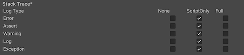
Stack Trace settings for UWP.
Select your preferred stack trace method by enabling the option that corresponds to each Log Type (Error, Assert, Warning, Log, and Exception) based on the type of logging you require. For example:
Unity stores these settings in the Package.appxmanifest file when creating a Visual Studio solution for the first time.
Note: If you build your project on top of the existing one, Unity doesn’t overwrite the Package.appxmanifest file if it’s already present. That means if you change any of the Player settings, you need to check Package.appxmanifest. If you want to regenerate Package.appxmanifest, delete it and rebuild your project from Unity.
For more information, refer to Microsoft’s documentation on App package manifest.
Supported orientations from Player Settings are also populated to the manifest (Package.appxmanifest file in Visual Studio solution). On UWP apps, Unity resets the orientation to the one you used in the Player settings, regardless of what you specify in the manifest. This is because Windows itself ignores those settings on desktop and tablet computers.
提示：始终可使用 Unity Scripting API 来更改支持的方向。
Packaging
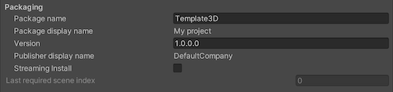
Packaging settings for UWP.
属性
描述
包名称
输入用于标识系统上的包的名称。名称必须具有唯一性。
Package display name
The Product Name value that you set at the top of the Player settings appears here. This is the name of the app as it will appear on the Microsoft Store.
版本
使用四元表示法中的字符串输入包的版本：Major.Minor.Build.Revision。
Publisher display name
The Company Name value that you set at the top of the Player settings appears here. This is the user-friendly name of the publisher.
Streaming Install
启用此选项可创建包含场景的可串流资源的 AppxContentGroupMap.xml 清单文件。要默认包含场景资源，请使用 Last required scene index 设置。在清单文件中，场景索引高于 Last required scene index 值的场景中的资源将被指定为可串流。
Last required scene index
Enter the index number from the Scenes In Build list on the Build Settings window that corresponds to the last scene in that list that must be present in the game build. For an application to start, Unity requires any scene index at or less than the specified index. To require all files in the list, use the index of the last scene in the list. Scenes with a greater scene index must include shared Assets for Scenes with a lesser index. The order of scenes in the Build Settings dialog may be important to allow the application to locate the required assets.
Note: By default, the Streaming Install option is disabled, which means that this setting isn’t available. To make this property editable, enable the Streaming Install option first.
Certificate
Every UWP App needs a certificate which identifies a developer.
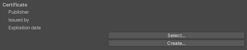
Before creating the certificate.
Click Select to choose your certificate file (.pfx) from your local computer. The name of the file you selected appears on Select.
如果还没有证书文件，则可以在 Unity 中生成文件：
Click Create. The Create Test Certificate for Microsoft Store dialog window appears.
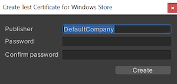
Enter the name of the package publisher in the Publisher text box.
You may also protect the certificate with a password but this is optional. We recommend leaving the password field blank.
Click Create.
The window closes and the Certificate section displays the name you entered for both the Publisher and Issued by values. The Expiration date is set to one year from the time you created the certificate.
Enter the text you want to appear on the app’s tile on the Microsoft Store in the Description text box. This defaults to the Package display name value.
File and Protocol Associations
The settings under the File Type Associations, File Types, and Protocol sections allow you to set up your Microsoft Store app as the default handler for a certain file type or URI scheme.
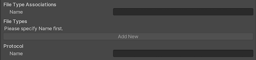
File Type Associations section for UWP.
Under the File Type Associations section, enter the name (lowercase only) for a group of file types in the Name text box. These are files that share the same display name, logo, info tip, and edit flags. Choose a group name that can stay the same across app updates.
如果要将其设置为文件关联，请执行以下操作：
Click Add New. An empty entry appears in File Types. You can add multiple file types.
Enter the MIME content type in the Content Type text box for a particular file type. For example, image/jpeg.
Enter the file type to register for in the File Type text box, preceded by a period (for example, .jpeg).
If you are setting this up as an association with a URI scheme, enter the protocol in the Name text box.
Unity receives input by subscribing to events. The Input Source setting defines where (which sources) to get input from. Currently this only applies to mouse and touch input, as keyboard input always comes from CoreWindow.
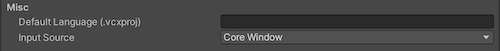
Misc settings for UWP.
属性
描述
Default Language (.vcxproj)
Sets the XML default language in the generated Visual Studio project. If not specified, ‘en-US’ is used. Note: Changes only apply to the initial file generation, changes don’t affect pre-existing files.
Input Source
Defines which sources to receive input from. Currently this only applies to mouse and touch input, as keyboard input always comes from CoreWindow.
CoreWindow
Subscribes to CoreWindow events. This is the default.
Independent Input Source
Creates Independent Input Source and receive input from it.
SwapChainPanel
Subscribes to SwapChainPanel events.
Capabilities
Use the Capabilities section to enable APIs or resources you want your app to access. These could be pictures, music, or devices such as the camera or the microphone.
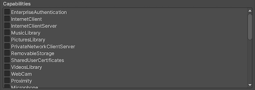
Capabilities settings for UWP.
属性
描述
EnterpriseAuthentication
Windows domain credentials enable a user to log into remote resources using their credentials, and act as if a user provided their username and password.
InternetClient
Allows your app to receive incoming data from the Internet. Can’t act as a server. No local network access.
InternetClientServer
Same as InternetClient but also enables peer-to-peer (P2P) scenarios where the app needs to listen for incoming network connections.
Accesses the video feed of a built-in camera or external webcam, which allows the app to capture photos and videos. Note: This only grants access to the video stream. In order to grant access to the audio stream as well, the Microphone capability must be added.
允许应用程序以编程方式访问 3D 对象文件。此功能通常用于需要访问整个 3D 对象库的 3D 应用程序和游戏。
PhoneCall
Allows apps to access all of the phone lines on the device and perform the following functions. Place a call on the phone line and display the system dialer without prompting the user. Access line-related metadata. Access line-related triggers. Allows the user-selected spam filter app to set and check block list and call origin information.
Provides programmatic access to spatial mapping data, giving mixed reality apps information about surfaces in application-specified regions of space near the user. Declare the spatialPerception capability only when your app will explicitly use these surface meshes, as the capability isn’t required for mixed reality apps to perform holographic rendering based on the user’s head pose.
Note: If you build your game on top of a previous package, Package.appxmanifest won’t be overwritten.
Supported Device Families
A device family identifies the APIs, system characteristics, and behaviors across a class of devices. It also determines the set of devices on which your app can be installed from the Store. For more information, refer to Microsoft’s Device families overview.
If no options are enabled, Windows.Universal is used as default, which enables your app to be available on all device families. You can also set this within the API in PlayerSettings.WSATargetFamily instead of in the Editor.
Note: These settings are used only when generating a new UWP Visual Studio solution. Changing these settings has no effect if you rebuild UWP to an existing folder.
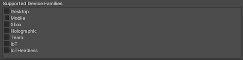
Supported Device Families settings for UWP.
属性
描述
桌面端
Indicates whether your application supports the Desktop device family.
Mobile
Indicates whether your application supports the Mobile device family.
Holographic
Indicates whether your application supports the HoloLens (self-contained, holographic computer) device family. This is used for Mixed Reality apps.
Team
Indicates whether your application supports the Team device family. This is commonly used for Microsoft Surface Hub devices.
IoT
Indicates whether your application supports the IoT device family.
Note: Currently, apps targeting IoT aren’t valid in the app store and should be used only for development purposes.
IoTHeadless
Indicates whether your application supports the IoTHeadless device family.
Note: Currently, apps targeting IoTHeadless aren’t valid in the app store and should be used only for development purposes.